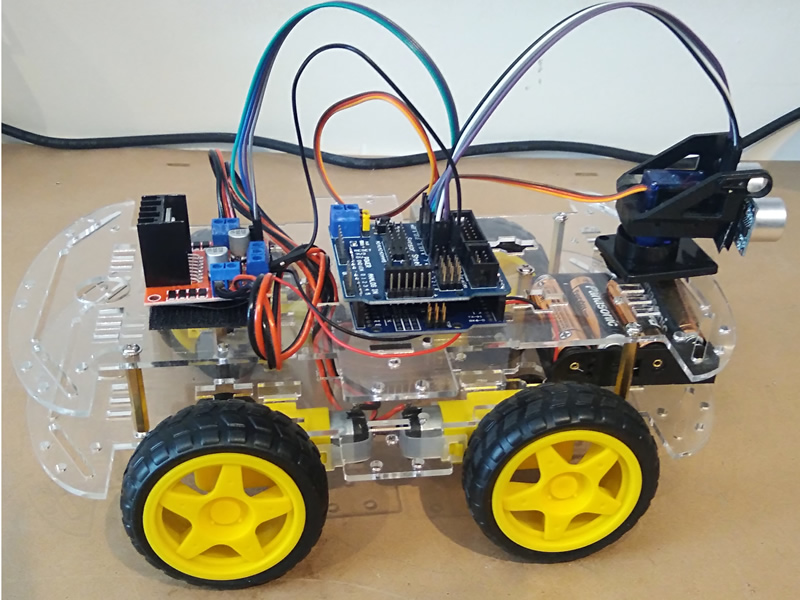

What we did
In Week 4 we built a fully finished smart car that used an ultrasonic sensor and an Arduino board. The car was assembled carefully, wired properly, and tested to make sure it worked well. We also studied soldering and used it to make the connections more reliable.

Finished Car Project
This image shows a completed car setup with wires, an ultrasonic sensor, and an Arduino board, similar to the one built in Week 4.
- We built a fully finished car with an ultrasonic sensor for obstacle detection.
- We assembled the car body, wheels, and electronic parts carefully.
- We connected the wires neatly and made sure the circuit was working properly.
- We studied soldering and used it to strengthen the electrical connections.
- We tested the performance of the completed car and confirmed that it worked successfully.